FernsehFranzi – Das Handbuch für Version 6.0 · November 2026
Dieses Handbuch beschreibt FernsehFranzi so, wie es auf dem Raspberry Pi am Fernseher läuft: vom ersten
Einschalten über die Bedienung mit Fernbedienung, Controller und Tastatur bis zu den Einstellungen der Eltern und dem
technischen Betrieb. Die Bilder zeigen Beispieldaten.
Eine Kurzanleitung zum Ausdrucken für neben den Fernseher gibt es als eigenes Blatt (kurzanleitung.pdf),
die Anleitung für Kinder als kinder-anleitung.pdf. Alle liegen auf der Eltern-Seite unter „Mehr“.
FernsehFranzi ist freie Software unter der MIT-Lizenz. Die Emoji-Schrift stammt aus Noto Color Emoji
(SIL Open Font License 1.1), die 3D-Bilder auf den Kacheln aus Fluent Emoji von Microsoft (MIT-Lizenz). Quellcode und alle Versionen: github.com/bussdee/fernsehfranzi
Ein Fernseher für Kinder sollte schnell sein, einfach zu bedienen und sicher, ohne Werbung, ohne
endlose Vorschläge und ohne Ausweg ins offene Internet.
Genau dafür ist FernsehFranzi entstanden. Ein kleiner Computer, ein Raspberry Pi, hängt am Fernseher und zeigt eine
eigene Startseite. Darauf liegt alles, was die Eltern freigegeben haben: Filme und Serien, ausgewählte YouTube-Videos,
Bücher, Hörbücher, Lernseiten, Retro-Spiele wie früher und ein eigenes Spielzimmer mit kleinen Spielen. Bedient wird
alles mit der normalen Fernbedienung des Fernsehers.
Damit der Fernseher nicht den ganzen Tag läuft, zählt FernsehFranzi die Spielzeit und kennt Sperrzeiten wie Schule
und Nachtruhe. Lernen kann Spielzeit verdienen, eine Bewegungspause unterbricht langes Sitzen, und abends hilft
„Gute Nacht“ mit einem Hörbuch beim Einschlafen.
Dieses Buch ist in drei Teile gegliedert. Teil I erklärt alles, was die Familie am Fernseher braucht, und kann
gut gemeinsam mit dem Kind gelesen werden. Teil II richtet sich an die Eltern: Einrichtung, Regeln, der
Elternbereich und die Eltern-Seite am Handy. Teil III beschreibt die Technik für alle, die das Gerät betreuen.
Im Anhang stehen alle Tasten und Symbole auf einen Blick.
So liest man die Tasten
Tasten der Fernbedienung stehen in Kästchen: OK, STOP,
EXIT. Die Farbtasten sind farbig: ROTGRÜNGELBBLAU.
Pfeiltasten heißen ←→↑↓.
👨👩👧
TEIL I
Für die ganze Familie
Bedienen, Startseite, Filme, Spiele, Musik, Retro-Spiele, Spiele mit Handys und alles, was am Fernseher passiert.
Kapitel 1
Was ist FernsehFranzi?@@k02@@
Ein kleiner Computer am Fernseher mit einer Startseite nur für Kinder.
Nach dem Einschalten des Fernsehers erscheint nach ein bis zwei Minuten die Startseite. Oben stehen Uhrzeit,
Begrüßung und die verbleibende Spielzeit des Tages, darunter die Kacheln, sortiert nach Bereichen. Mit den Pfeiltasten
wählt man eine Kachel aus, mit OK startet sie.
Die Startseite: oben Uhr und Restzeit, darunter die
Bereiche mit ihren Kacheln.
Was auf dem Fernseher läuft
Bereich
Inhalt
🏠 Start
Gute Nacht, Gutschein, Wecker, Nachrichten, Gestalten und die eigenen Lieblinge
🎮 Spiele
Das Spielzimmer: Snake, Memory, Drei gewinnt, Farben-Echo, Malen, Witze, Zu zweit, Sticker
🎓 Lernen
Bücher (Kavita), Lernseiten, Lernspiele
🎼 Musik
Die Musik-Akademie mit Bass, Gitarre, Keyboard und Singen
🎬 Filme & YouTube
Plex, die YouTube-Auswahl der Eltern, eigene Video-Ordner
🕹️ Retro
Retro-Spiele (RetroPie) und die zuletzt gespielten Spiele
Wer was einstellt
Welche Kacheln es gibt und in welchem Bereich sie liegen, legen die Eltern fest. Das Kind kann am Fernseher nichts an den Regeln verändern. Alles Einstellbare liegt hinter der Eltern-PIN: im
Elternbereich direkt am Fernseher (BLAU) und auf der Eltern-Seite am
Handy im Heimnetz. Beides beschreibt Teil II.
Drei Wege, eine Bedienung: Was mit der Fernbedienung geht, geht auch mit dem Controller und der Tastatur.
Die TV-Fernbedienung
Die normale Fernbedienung des Fernsehers steuert FernsehFranzi über HDMI (Anynet+/CEC). Dafür muss am Fernseher
der richtige HDMI-Eingang gewählt sein.
Was
Taste
Auswählen
Pfeiltasten ←→↑↓
Öffnen, bestätigen
OK
Einen Schritt zurück
STOP
Zur Startseite – von überall
EXIT (im Retro-Spiel lange drücken)
Abspielen, Pause, Spulen
▶⏸◀◀▶▶
Ton aus dem Fernseher
ROT
Ton aus Anlage oder Kopfhörer (Klinke)
GRÜN – ein Bluetooth-Kopfhörer bekommt den Ton von selbst, sobald er verbunden ist
Lauter, leiser
GELB, dann ↑ / ↓ (vier Sekunden lang)
Elternbereich (PIN)
BLAU
Kachel direkt öffnen
Ziffern 1 bis 0
Gut zu wissen
Die Pfeiltasten bewegen immer die Auswahl, auch wenn in Plex Musik oder ein Film läuft. Für den Player gibt es
die eigenen Tasten Abspielen, Pause und Spulen. Die Lautstärketasten der Fernbedienung regeln nur den Fernseher selbst,
nicht den Ton über die Klinke; dafür gibt es GELB und die Pfeile.
Der Controller
Was
Taste
Auswählen
Steuerkreuz oder linker Stick
Öffnen, ja
A
Zurück
B
Zur Startseite
Xbox-Taste (in der Mitte)
Abspielen, Pause
Start; Spulen mit LB / RB
Lauter, leiser
Back festhalten und ↑ / ↓
Elternbereich
Back und Start lange halten
Die kleine Funk-Tastatur
Eine Bluetooth-Tastatur mit Touchpad funktioniert wie die Fernbedienung und hat dazu Sondertasten:
Taste
Was sie tut
Pfeiltasten, Enter
Auswählen, öffnen
Haus ⌂
Zur Startseite (im Retro-Spiel: Spiel beenden, zweimal: Startseite)
Zurück ↶
Wie STOP
Lupe 🔍
Nachrichten öffnen, dort auch selbst schreiben
Menü ⚙️
Elternbereich (PIN)
Lauter, leiser, stumm
Lautstärke, auch im Retro-Spiel, höchstens bis zur Grenze der Eltern
⏯ ⏮ ⏭
Abspielen/Pause, voriger/nächster Titel oder Video
U / 0
Im YouTube-Player: Untertitel an/aus · Video von vorn
Touchpad
Maus für Plex und Webseiten (der YouTube-Player bleibt geschützt)
Kapitel 3
Die Startseite@@k04@@
„Zuhause“ zeigt nur wenig auf einmal: die Lieblinge, „Weiter, wo du warst“ und die Bereiche. Ein
Bereich öffnet sein eigenes Raster.
Ganz oben steht der Gruß mit Uhrzeit, Wetter und der Restzeit als Balken. Darunter liegen drei Reihen:
⭐ Meine Lieblinge (bis zu sechs, ausgesucht unter „Gestalten“), ▶ Weiter, wo du warst (die zuletzt
benutzten Apps und Spiele) und die Bereiche 🎮 Spiele · 🎬 Filme · 🎵 Musik · 🎓 Lernen · 📨 Mein Zimmer · 🕹️ Retro.
OK auf einen Bereich öffnet sein Raster mit großen Kacheln, STOP führt
zurück nach „Zuhause“. Die Pfeile bewegen in alle Richtungen, die Ziffern öffnen eine Kachel der gewählten Reihe direkt.
Unten stehen der Name der gewählten Kachel mit einem kurzen Satz und die wichtigsten Tasten.
Oben links winkt Franzi, ein kleiner Fernseher mit Gesicht – das Maskottchen. Franzi schläft, wenn der Fernseher
Pause macht, jubelt bei gewonnenen Spielen und staunt, wenn eine Seite leer ist. Jede Farbe hat ihr eigenes ruhiges
Hintergrundbild (Weltraum, Wald, Zaubernacht, Berge im Abendrot, Himmel, Wiese, Zuckerwatte, Strand, Winter); Schwarz
bleibt fast schlicht. Beim Öffnen eines Bereichs gleiten die Kacheln kurz herein.
„Zuhause“: Lieblinge, Weiter, Bereiche.
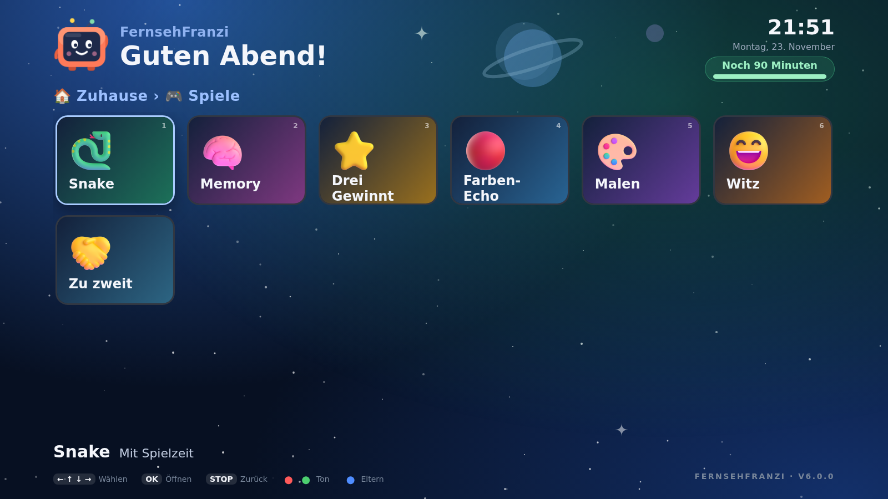
Der Bereich „Spiele“ als Raster.
Restzeit und graue Kacheln
Oben rechts steht, wie viel Spielzeit heute noch übrig ist, zum Beispiel „Noch 90 Minuten“, darunter als Balken.
Gesperrte Kacheln stehen am Ende eines Bereichs, abgedunkelt, mit Symbol und einem kurzen Grund auf der Kachel
(„Zeit um“, „Nachtruhe“, „Schulzeit“). Ganz unten steht beim Anwählen der genaue Grund.
Symbol
Bedeutung
⏳
Die Spielzeit für heute ist aufgebraucht
🌙
Nachtruhe
🏫
Schulzeit
🚫
Eine andere Sperrzeit der Eltern
🔒
Von den Eltern gesperrt
🕐
Die Uhr stellt sich nach dem Einschalten noch
⚙️
Noch nicht eingerichtet (zum Beispiel fehlt eine Adresse)
Gestalten und Bildschirmschoner
In der Kachel 🎨 Gestalten sucht sich das Kind seine Lieblinge aus (⭐, sie stehen dann vorne im Bereich
„Start“) und wählt mit ←→ die Farbe (Kapitel 11). Nach fünf
Minuten ohne Tastendruck zeigt der Fernseher die selbst gemalten Bilder als Bildschirmschoner.
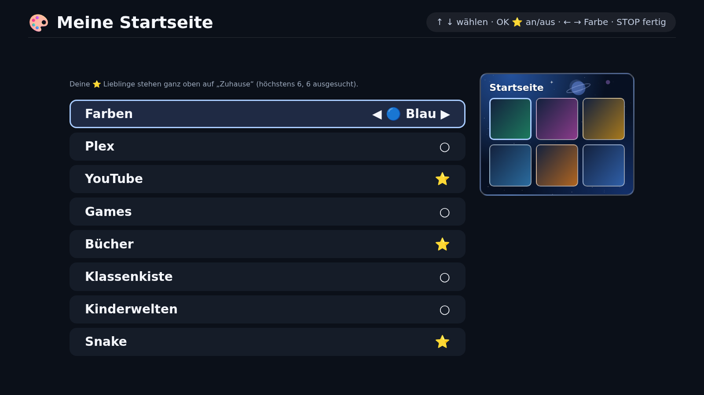
Gestalten: Farbe mit Vorschau und Lieblinge.
Fotoalbum
Haben die Eltern es erlaubt, gibt es die Kachel 🖼️ Fotoalbum. Oben stehen drei Quellen: 📁 Fotos aus dem
Ordner der Eltern, 📷 Mein Album mit Fotos aus Nachrichten und 🎨 Meine Bilder mit den Zeichnungen. Mit
OK bekommt ein Bild einen ⭐. Mit dem Knopf „Bildschirmschoner“ zeigt der Fernseher die
ausgesuchten Bilder statt der Zeichnungen, wenn eine Weile keine Taste gedrückt wird – schön, wenn Freunde zu Besuch
sind. „▶ Diashow jetzt“ startet sie sofort. Bilder aus dem Album und Zeichnungen lassen sich hier auch schicken oder löschen.
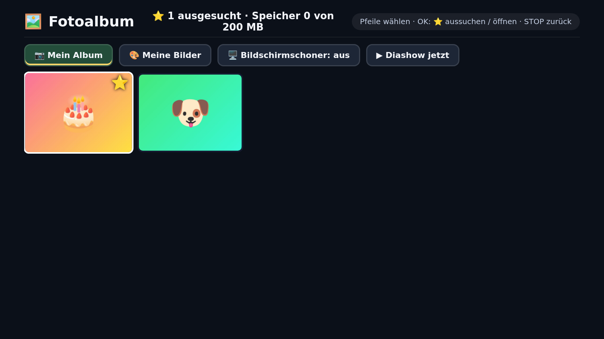
Das Fotoalbum: ⭐ markiert die Bilder für den Bildschirmschoner.
Kapitel 4
Filme, YouTube und Bücher@@k05@@
Plex, eine sichere YouTube-Auswahl, eigene Video-Ordner und Bücher – alles im Bereich „Filme & YouTube“ und „Lernen“.
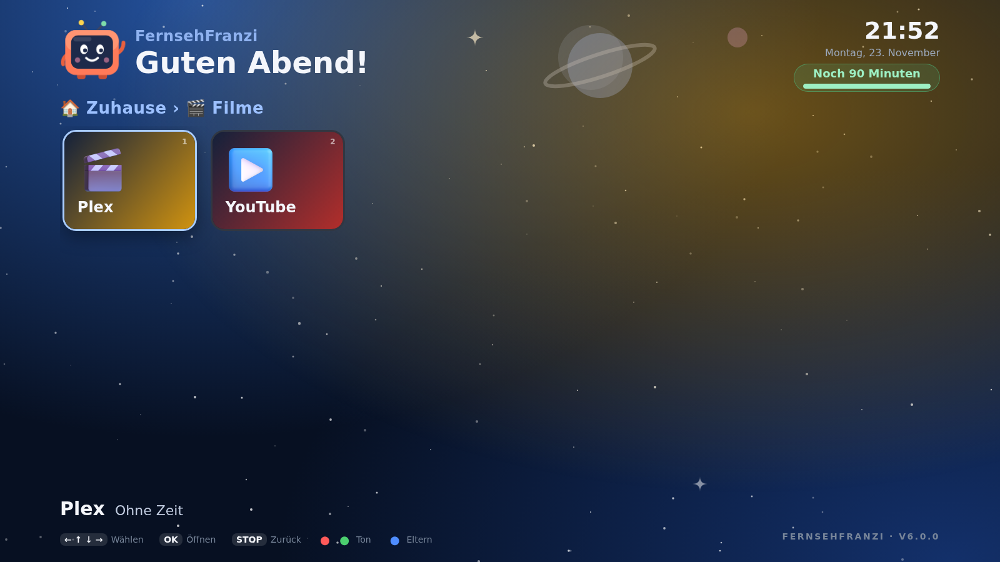
Der Bereich „Filme & YouTube“.
Plex
Plex zeigt die Filme, Serien und Musik vom Server im Heimnetz, auf Wunsch gleich mit dem Kinderprofil. In Plex
bewegen die Pfeiltasten die Auswahl, OK startet, STOP geht
zurück. Abspielen und Pause gehen mit den Player-Tasten. EXIT bringt jederzeit zur
Startseite.
YouTube – nur die Auswahl der Eltern
Die Kachel ▶️ YouTube zeigt Kategorien mit den Videos und Playlisten, die die Eltern auf der Eltern-Seite
gespeichert haben. Am Fernseher läuft nur das Video, in einem eigenen Player ohne YouTube-Seite: keine Vorschläge,
keine Suche, keine Kommentare. Pause und Ende verdeckt FernsehFranzi selbst, bevor YouTube „Weitere Videos“ zeigt.
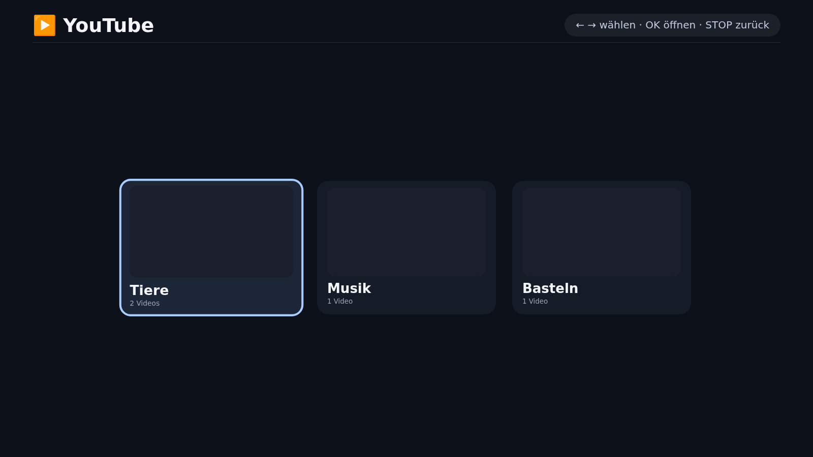
Die Kategorien der Eltern in der Kachel YouTube.
Im Player
Taste
Abspielen, Pause
▶ / ⏸ oder OK
10 Sekunden zurück, vor
◀◀ / ▶▶
Voriges, nächstes Video
← / →
Untertitel an/aus
U (Tastatur); von Anfang an aus
Von vorn
0
Zurück zur Videoliste
STOP
Weiterschauen
Lange Videos ab zehn Minuten merken sich die Stelle. Beim nächsten Öffnen erscheint „Weiter ab 25:00“ und das
Video läuft dort weiter. Die Taste 0 startet von vorn. Playlisten spielen Video für Video
nacheinander ab.
Eigene Video-Ordner
Filme aus einem freigegebenen Ordner im Heimnetz (FileBrowser) laufen im eigenen Video-Player. Ordner mit einem
Bild (am besten cover.jpg) zeigen dieses als Titelbild. Ganz oben steht „▶ Weiterschauen“ mit der Stelle vom
letzten Mal; auch wer denselben Film im Ordner wieder öffnet, landet an der gemerkten Stelle. Am Pi 3 laufen Videos
im Format MP4 (H.264) bis 720p am besten.
Bücher
Die Kachel 📚 Bücher öffnet Kavita mit Büchern und Comics vom Server. Geblättert wird mit den Pfeiltasten.
Kapitel 5
Gute Nacht: Hörbücher zum Einschlafen@@k06@@
Ein Hörbuch, ein Einschlaf-Timer und ein dunkler Sternenhimmel – danach geht der Fernseher von selbst aus.
Die Kachel 🌙 Gute Nacht spielt Hörbücher aus einem Ordner im Heimnetz. Unterordner sind einzelne
Hörbücher, die Dateien darin die Kapitel. Gute Nacht kostet keine Spielzeit und geht immer: abends, nachts und
beim Mittagsschlaf.
Kachel öffnen. Ganz oben steht „▶ Weiterhören“ mit der Stelle vom letzten Mal.
Der Fernseher fragt: „Wie lange möchtest du hören?“ Mit ←→ die Zeit wählen, OK.
Ein anderes Hörbuch: bei der Frage STOP, dann mit ↑↓ aussuchen und OK; ← geht einen Ordner zurück.
Nach 30 Sekunden erscheint ein sehr dunkler Sternenhimmel mit Mond, ab und zu zieht eine Sternschnuppe oder ein
Vogel vorbei. Eine Taste holt den Player zurück. Ist die Zeit um, wird das Hörbuch leiser, hält an, merkt sich die
Stelle, und der Fernseher geht aus.
Was
Taste
Abspielen (fragt wieder nach der Zeit)
▶
Anhalten
⏸
30 Sekunden zurück, vor
◀◀ / ▶▶
Schließen
STOP
Ganz leise
Solange Gute Nacht läuft oder der Sternenhimmel zu sehen ist, macht der Fernseher keine Töne: kein Gong, kein
Countdown. Nachrichten warten bis zum nächsten Morgen.
Kapitel 6
Das Spielzimmer@@k07@@
Kleine, eigene Spiele für zwischendurch – mit der Fernbedienung oder zu zweit mit Controllern.
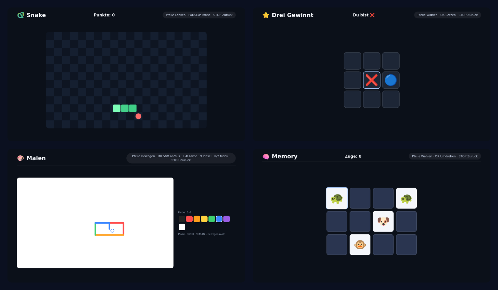
Snake, Drei gewinnt, Malen und Memory.
Spiel
So geht's
🐍 Snake
Lenken mit den Pfeilen. Tempo gemütlich, normal oder flott. P oder Pause hält an.
🧠 Memory
Paare finden, allein oder zu zweit, in drei Größen – auch mit den eigenen gemalten Bildern.
⭐ Drei gewinnt
Das Kind ist ❌, der Fernseher 🔵. Drei Stufen bis „Schwer“.
🔴 Farben-Echo
Farben und Töne merken und nachspielen, mit den Pfeilen oder den Farbtasten.
OK zeigt die Lösung, noch einmal OK den nächsten Witz.
🤝 Zu zweit
Ballduell, Snake-Duell, Quiz-Duell und Sternen-Abwehr – gegeneinander oder gemeinsam, mit zwei Controllern.
🏅 Sticker
Das Album: Für Erfolge in Spielen, beim Malen, Lernen, Üben und für Bewegungspausen gibt es Sticker.
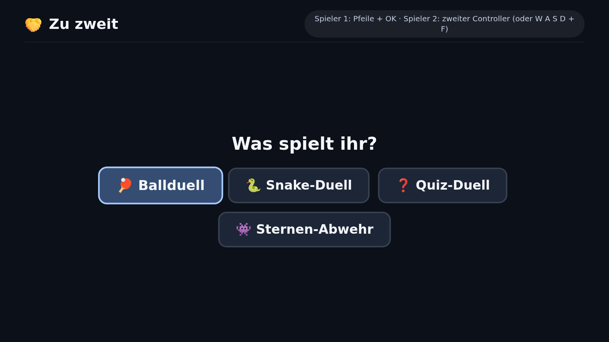
Zu zweit
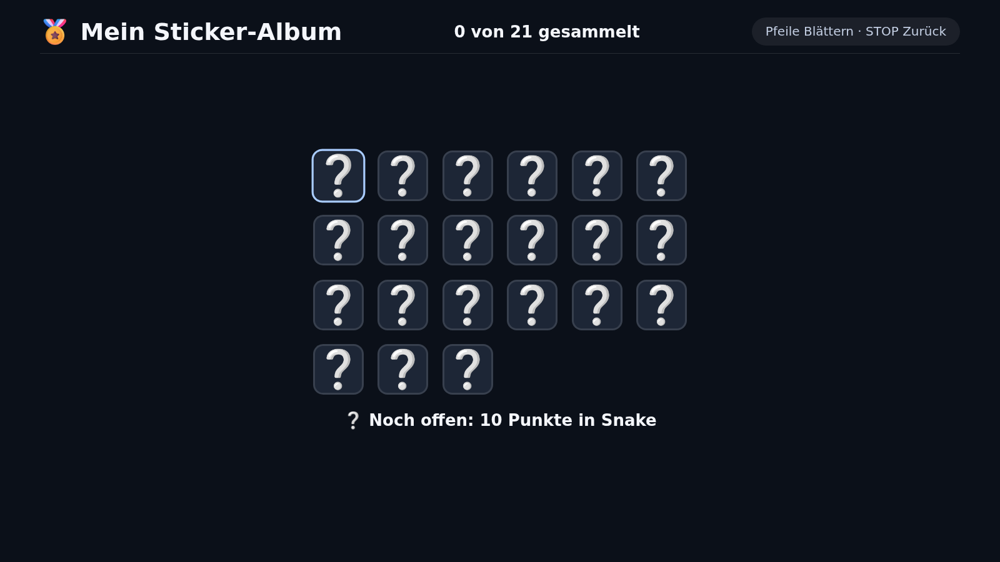
Das Sticker-Album
Gemalte Bilder speichert das Malen-Spiel in der Galerie. Die Eltern sehen sie auf der Eltern-Seite unter „Mehr →
Bilder“, und sie erscheinen im Bildschirmschoner und auf Wunsch im Memory.
Kapitel 7
Musik-Akademie und Lernen@@k08@@
Ein Instrument üben, Töne treffen, Einmaleins und Uhr lesen – und dabei Spielzeit verdienen.
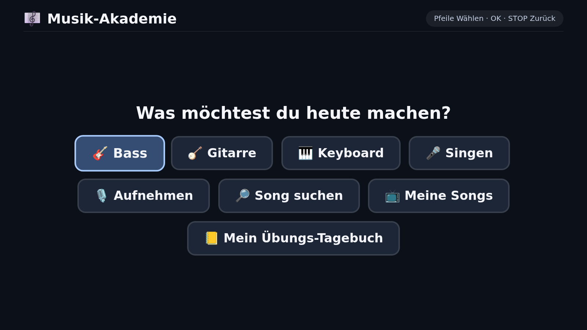
Die Musik-Akademie: erst das Instrument wählen.
Die Musik-Akademie
Bereich
Was es gibt
🎸 Bass
Stimmen mit Referenztönen, Stimmgerät mit großem Zeiger (mit USB-Mikrofon, grün = genau), Metronom, Tempo-Trainer, Rhythmus-Spiel,
Griffbrett-Trainer (auch mit dem echten Bass – das Mikrofon erkennt den Ton), Nachspielen, Gehörbildung, Tabs lesen.
🪕 Gitarre
Stimmgerät, Akkord-Bilder (←→ blättern, OK anschlagen), Akkordwechsel-Trainer.
🎹 Keyboard
Frei spielen, Akkorde zeigen, Töne nachspielen.
🎤 Singen
Der Fernseher spielt einen Ton, das Kind singt ihn nach. Die eigene Stimme läuft als Linie über den
Bildschirm, das grüne Band ist der Zielton. Wer den Ton knapp eine Sekunde hält, füllt den Ring und bekommt einen Stern;
bei „Tonleiter singen“ gibt es acht Sterne zu sammeln.
🎙️ Aufnehmen
OK startet und stoppt, ▶ spielt vor. Bleibt nur am Fernseher.
🔎 Song-Suche
Song oder Band eintippen: Akkorde und Tabs für alle Instrumente.
📺 Meine Songs
Songs der Eltern mit Erklärvideo, Tabs und Backing Track; dazu Plex-Playlisten für Unterricht und Backing Tracks.
📒 Tagebuch
Wie viel geübt wurde, mit Serie: Wer schafft eine ganze Woche?
🎤 Karaoke
Die Kachel Karaoke (Bereich Musik) zeigt die Lieder der Klassenkiste. Ist das Kind in der Klassenkiste-Kachel
angemeldet, holt der Fernseher die Lieder selbst – Text und Musik. Mit ↑↓ ein Lied wählen, OK singt. Der Text läuft groß im Takt des Liedes
mit; OK hält an, ◀◀▶▶ springen 10 Sekunden,
↑↓ schieben den Text, ←→ wechseln das Lied. Mit dem USB-Mikrofon gibt es am Ende Sterne fürs Mitsingen.
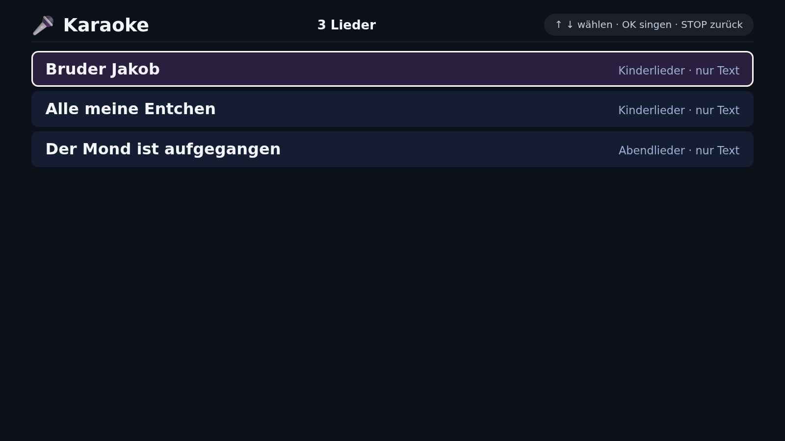
Die Lieder der Klassenkiste
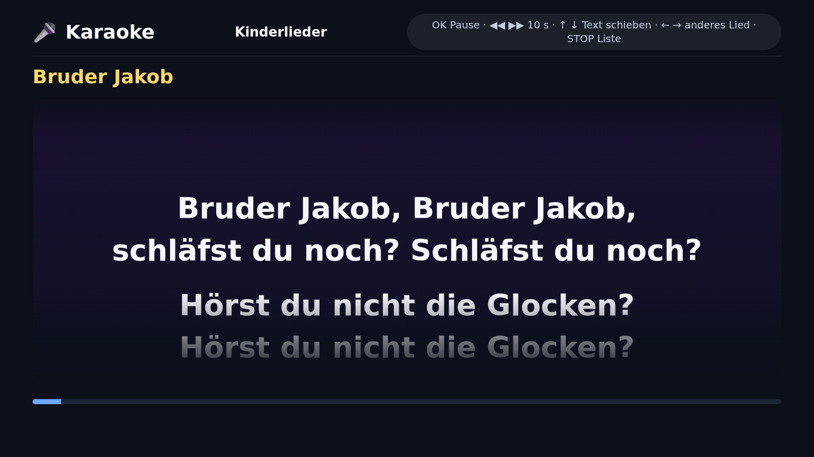
Der Text läuft im Takt mit
Lernspiele
Einmaleins (Reihe wählbar), Uhr lesen mit einer analogen Uhr und Englisch mit Bildern, Farben und Zahlen. Die
Antwort wählt man mit den Pfeilen und bestätigt mit OK.
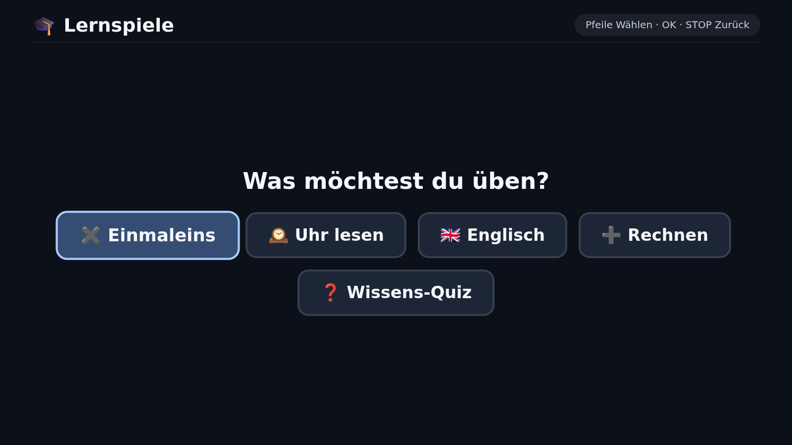
Lernspiele
Lernen bringt Spielzeit
Wenn die Eltern es eingeschaltet haben, verdient Lernen Spielzeit, zum Beispiel je 20 Minuten Lernen zehn Minuten
mehr. Es zählen nur aktive Minuten. Ab und zu fragt der Fernseher: „Bist du noch beim Lernen? Drück nacheinander
← ↑ →“. Wer die Folge innerhalb von 90 Sekunden drückt, bekommt die Zeit gutgeschrieben.
Kapitel 8
Retro-Spiele@@k09@@
Spiele wie früher: C64, Amiga, Super Nintendo, Game Boy, Nintendo 64 und mehr.
Die Kachel 🕹️ Games öffnet die Spieleliste von RetroPie. Erst die Konsole aussuchen, dann das Spiel, und mit
A starten. Die zuletzt gespielten Spiele stehen auch direkt im Bereich „Retro“ der
Startseite. Während eines Spiels ist die Startseite ganz geschlossen, damit der Pi genug Speicher hat; danach dauert
es ein paar Sekunden, bis sie wieder da ist.
Die Tricks mit der Xbox-Taste
Xbox-Taste festhalten und dazu drücken:
Was
Tasten
💾 Schnell speichern
Xbox + RB
📂 Gespeichertes laden
Xbox + LB
🔢 Speicherplatz wählen
Xbox + ← / →
⏸ Spiel-Menü
Xbox + X
🚪 Spiel beenden
Xbox + Start
🏠 Zur Startseite
In der Spieleliste: Xbox oder EXIT
Vorsicht
Xbox + B startet das Spiel ganz von vorn. Was seit dem
Speichern geschafft wurde, ist dann weg. Endet die Spielzeit, speichert der Fernseher das Spiel selbst.
C64
Spiele laden von selbst, Kassetten im Schnelllauf. Beim Start blendet der Fernseher die Tasten kurz ein.
C64
Controller
Joystick, Feuer
Steuerkreuz, A
Leertaste
Y oder X
F1
Start
RETURN
RT
Anderer Joystick-Anschluss
LB
Tastatur am Bildschirm
Back
Amiga
Diskettenspiele starten direkt, auch wenn mehrere Disketten in einer ZIP-Datei liegen. CD32-Spiele brauchen
zusätzliche Dateien, die dem Projekt nicht beiliegen (Kapitel 19).
Kapitel 9
Nachrichten, Wecker, Gutscheine und Pausen@@k10@@
Was die Familie dem Fernseher mitgibt – und was der Fernseher dem Kind sagt.
Nachrichten und Erinnerungen
Eine Nachricht der Eltern erscheint mit einem Gong groß auf dem Fernseher, auch in Plex und im Retro-Spiel, und
bleibt stehen, bis jemand OK drückt. Bis dahin kommt sie alle fünf Minuten wieder. Die
Eltern sehen auf der Eltern-Seite, wann sie gesehen wurde.
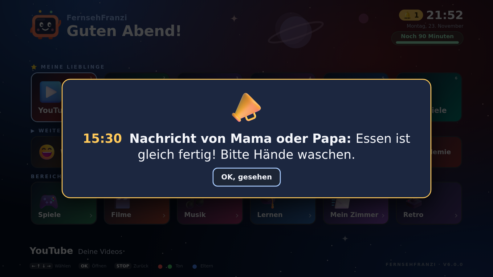
Eine Nachricht bleibt stehen, bis jemand OK drückt.
Jede Nachricht zeigt, von wem sie kommt: Telegram-Kontakte mit ihrem Symbol und Namen (zum Beispiel „🦄 Lena“).
Auf der Eltern-Seite wählt man über dem Nachrichtenfeld bei „Von“ den eigenen Namen aus den Eltern-Kontakten (das Handy
merkt ihn sich); ohne Wahl steht „Nachricht von Mama oder Papa“ da.
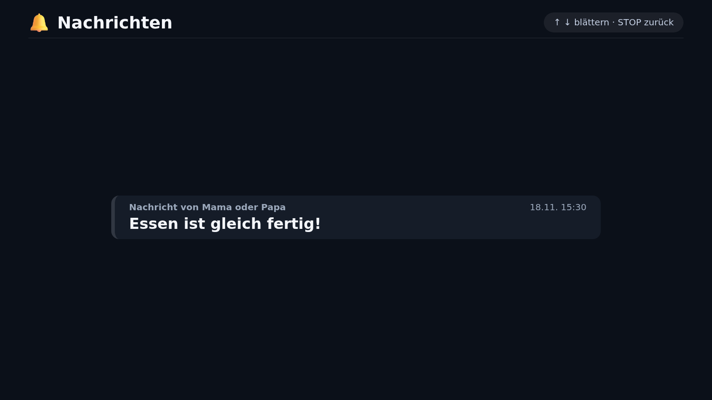
Die Kachel Nachrichten mit alten und neuen Nachrichten.
Die Kachel 🔔 Nachrichten zeigt alle neuen und alten Nachrichten und Erinnerungen; oben rechts zeigt eine
Glocke die Zahl der neuen. Ist Telegram eingerichtet, kann das Kind antworten: OK auf einer
Nachricht antwortet dem Absender, „✏️ Nachricht schreiben“ fragt zuerst „An wen?“ – zur Auswahl stehen nur
Kontakte, die die Eltern zum Schreiben freigegeben haben. Dann eine vorbereitete Antwort wählen oder, wenn für diesen
Kontakt erlaubt, mit der Tastatur selbst schreiben („⌨️ Eigenen Text tippen“, Enter schickt ab,
STOP bricht ab).
Fotos, Sprachnachrichten und Videos
Über Telegram können die Eltern (und Kontakte, die es dürfen) auch Fotos, Sprachnachrichten, Musik und kurze Videos
schicken. Ein Foto erscheint groß in der Nachricht, Ton und Video spielen einmal von selbst. In der Kachel Nachrichten
öffnet OK sie wieder; darunter stehen „⭐ Ins Album“ (Fotos behalten), „▶ Nochmal“ und
„↩ Antworten“. Nach sieben Tagen löscht der Fernseher die Nachrichten-Medien von selbst – was im Album ist, bleibt.
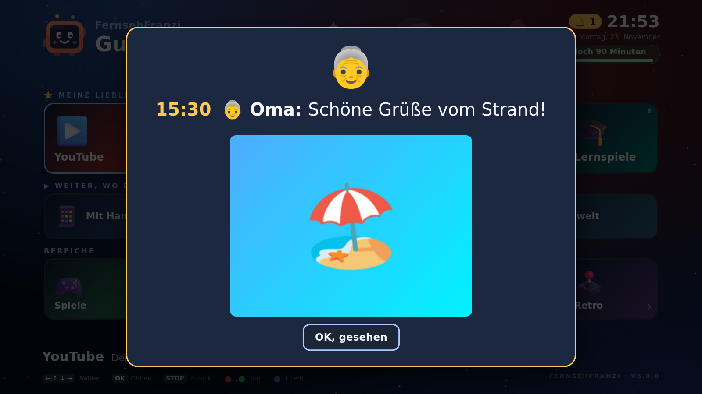
Ein Foto von Oma.
In Sperrzeiten
Nachrichten der Eltern kommen auch in einer Sperrzeit an und lassen sich beantworten – nur ohne Gong. Nachrichten
von Freunden zählen in der Sperrzeit nur in der Glocke mit („🔒 neue Nachricht von Freunden“); lesen und antworten geht
erst danach.
Bilder verschicken
In der Galerie von Malen und im Fotoalbum öffnet OK ein Menü: „📤 an …“ schickt das Bild an
einen freigegebenen Kontakt, „🗑 Löschen“ macht Platz, wenn der Speicher voll ist.
Wecker
In der Kachel ⏰ Wecker stellt das Kind Uhrzeit, Wochentage, Weckton und Lautstärke selbst ein – innerhalb
der Grenzen der Eltern. Zur Weckzeit geht der Fernseher an und der Ton wird langsam lauter; auf Wunsch wird der
Bildschirm vorher wie ein Sonnenaufgang langsam hell. OK heißt fünf Minuten schlummern,
STOP aus.
Gutscheine
Die Eltern drucken Gutscheine mit einem sechsstelligen Code. In der Kachel 🎟️ Gutschein tippt das Kind den
Code mit den Ziffern ein. Ein normaler Gutschein bringt Extra-Minuten, ein besonderer öffnet für eine
Weile alles, auch in Sperrzeiten. Jeder Code gilt einmal.
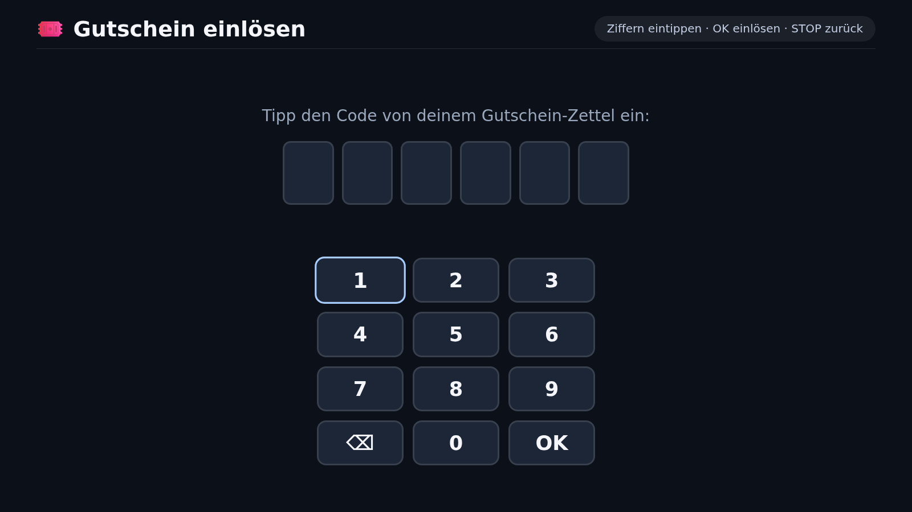
Gutschein einlösen
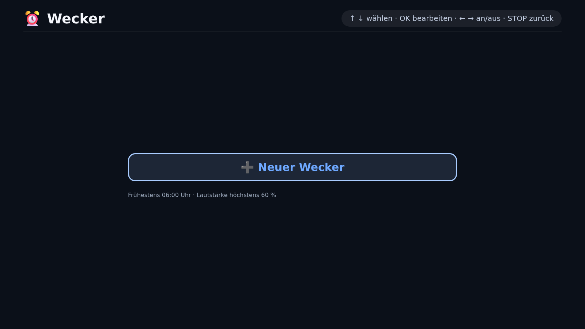
Den eigenen Wecker stellen
Bewegungspause
Nach langer Zeit am Stück ruft der Fernseher eine Bewegungspause aus: ein paar Minuten Hampelmann, Strecken,
Hüpfen. Ein Countdown zeigt die Zeit, danach gibt es einen Sticker. Läuft gerade ein Film, ein Hörbuch oder ein Spiel,
wartet es unter der Pause und geht danach genau dort weiter. Bei welchen Angeboten die Pause kommt, stellen die Eltern
ein.
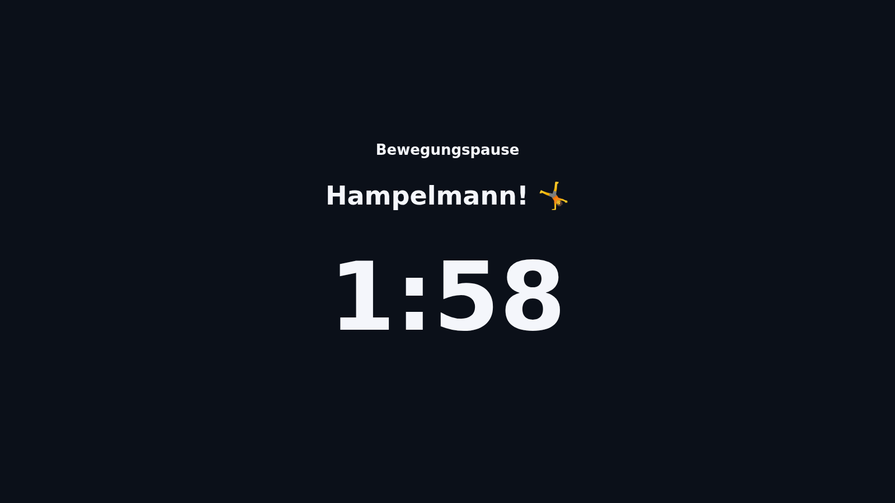
Die Bewegungspause mit Countdown.
Nachtruhe und Zeitende
Vor dem Ende der Spielzeit und vor einer Sperrzeit warnt der Fernseher bei 10, 5 und 1 Minute. Dann ist Zeit zum
Speichern. Zur Nachtruhe kann sich Gute Nacht von selbst öffnen; sonst bietet der Fernseher an, ihn auszuschalten.
Kapitel 10
Mit Handys spielen@@k21@@
Der Fernseher wird zur Spieltafel, jedes Handy zum Controller – für die ganze Familie und Freunde.
Wenn die Eltern es erlaubt haben (Eltern-Seite → Inhalte → Spiele, Gutscheine & Sticker → Handy-Spiele), gibt es im Bereich „Spiele“ die Kachel
📱 Mit Handys spielen. Sie öffnet den Spielraum: Der Fernseher zeigt einen großen QR-Code, darunter eine
Adresse und einen Raumcode aus vier Buchstaben.
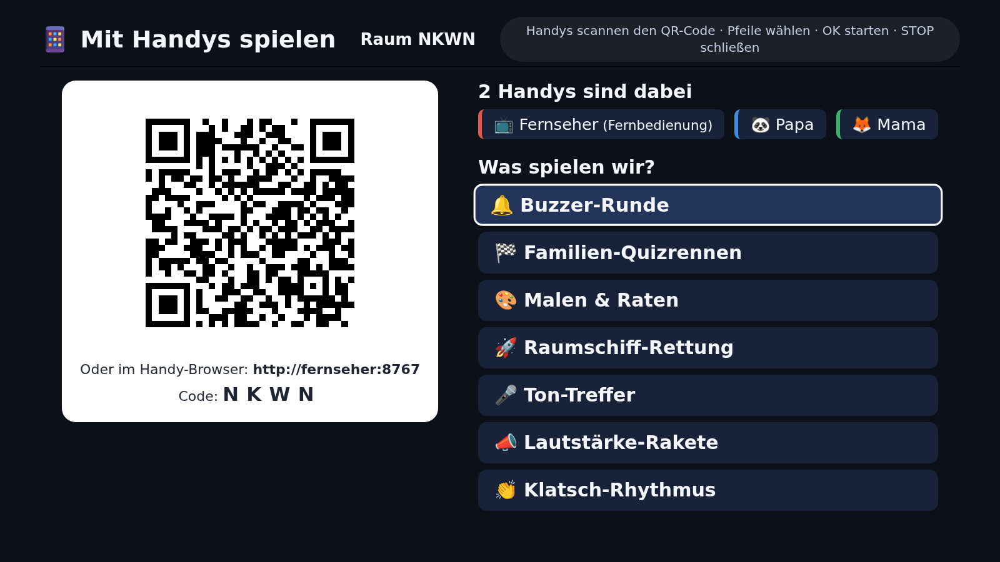
Der Spielraum: QR-Code, Mitspieler und die fünf Spiele.
Mitmachen
Mit der Handy-Kamera den QR-Code scannen (das Handy muss im selben WLAN sein). Geht das nicht, die Adresse im
Browser eingeben und den Raumcode eintippen.
Namen eingeben, ein Tier aussuchen, „Mitspielen“. Wer noch klein ist, setzt das Häkchen „Ich bin noch klein“ und
bekommt beim Quiz mehr Zeit.
Am Fernseher erscheinen alle Mitspieler. Mit den Pfeilen ein Spiel wählen, OK startet.
Das Kind spielt mit der Fernbedienung als eigener Spieler „📺“ mit: Unten am Fernseher stehen seine Knöpfe,
die Pfeile wählen, OK drückt. STOP führt im Spiel zurück zur
Auswahl, in der Auswahl schließt es den Spielraum.
Die fünf Spiele
Spiel
So geht's
🔔 Buzzer-Runde
Eine Frage erscheint am Fernseher. Wer zuerst auf den großen Buzzer drückt, darf antworten.
Ist die Antwort falsch, dürfen die anderen noch einmal buzzern. Zehn Fragen.
🏁 Familien-Quizrennen
Alle antworten gleichzeitig am Handy. Jede richtige Antwort bringt die eigene Figur
auf der Rennbahn ein Feld voran, die schnellste richtige zwei. Wer zuerst im Ziel ist, gewinnt. Fragen: Gemischt,
Einmaleins, Englisch oder eure eigenen Quizfragen.
🎨 Malen & Raten
Reihum malt einer einen Begriff auf seinem Handy, der Fernseher zeigt das Bild live. Die
anderen raten aus vier Begriffen. Wer früh richtig rät, bekommt mehr Punkte – und der Maler einen Punkt je Treffer.
🚀 Raumschiff-Rettung
Ein Spiel für alle zusammen. Am Fernseher blinkt eine Störung in einer Farbe (und
auf „schwer“ mit einem Zeichen). Jedes Handy hat nur einen Teil des Handbuchs und nur einige Schalter. Wer die
passende Regel findet, liest sie vor – wer den Schalter hat, drückt ihn. Acht Reparaturen retten das Schiff, drei
Fehler lassen es notlanden.
🎤 Ton-Treffer
Der Fernseher spielt eine kurze Tonfolge (do, re, mi …), der Spieler am Zug singt sie ins
USB-Mikrofon am Fernseher. Unter den Notenblasen läuft die Stimme als Linie mit, das grüne Band ist der richtige Ton.
Jeder getroffene Ton zählt, die anderen geben am Handy einen Daumen hoch. Die Folgen werden von Runde zu Runde
länger.
📣 Lautstärke-Rakete
Nach einem großen Countdown so laut und so lange wie möglich ins Mikro rufen – die Rakete
steigt mit Flamme an Wolken, Flugzeug und Sternen vorbei bis zum Mond, daneben zeigt ein Balken die Lautstärke. Wer
schafft den Rekord?
👏 Klatsch-Rhythmus
Der Fernseher klopft einen Rhythmus vor, eine Linie läuft über die Klatsch-Hände. Dann
klatscht der Spieler nach; jeder eigene Klatscher erscheint als Punkt darunter, grün heißt im Takt.
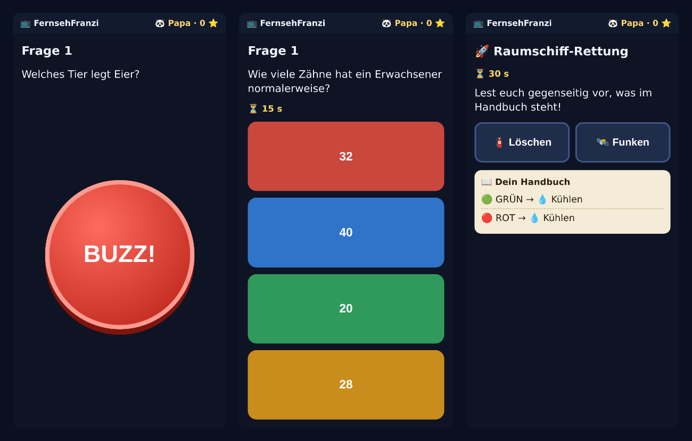
Am Handy: Buzzer, Quiz-Antworten, Schalter und Handbuch der Raumschiff-Rettung.
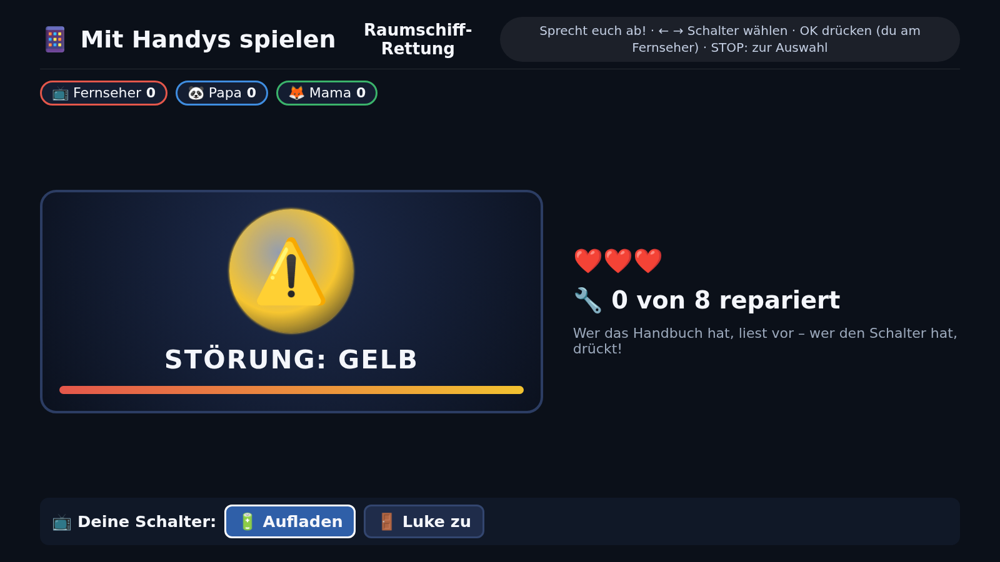
Raumschiff-Rettung am Fernseher
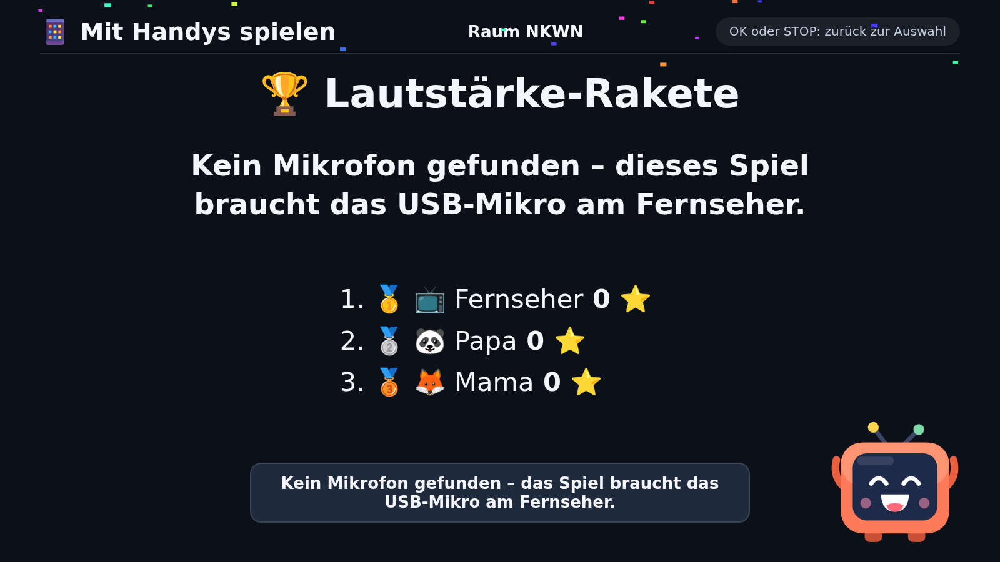
Lautstärke-Rakete
Gut zu wissen
Bis zu sechs Handys spielen mit. Über die Mitspieler wird nichts gespeichert; alles ist vorbei, sobald der Spielraum
schließt – bei einer Sperrzeit, wenn die Spielzeit um ist, nach zwei Stunden oder mit STOP.
Die Mikro-Spiele nutzen das Mikrofon am Fernseher, weil Handy-Browser ihr Mikrofon im Heimnetz nicht freigeben; sie
gehen auch ganz ohne Handy.
Kapitel 11
Wetter, Schule, Geschichten und Designs@@k22@@
Seit Version 5.0 holt der Fernseher Wetter, Schule und Geschichten auf eigene Seiten, und die Startseite
gibt es in zehn klaren Farben. Alles startet ausgeschaltet; die Eltern schalten es auf der Eltern-Seite
unter Inhalte ein.
Farben
In 🎨 Gestalten wählt das Kind oben die Farbe, rechts zeigt eine kleine Vorschau, wie die Startseite aussieht.
Es gibt fünf Paare aus einer dunklen und einer hellen Farbe: Blau und Hellblau, Grün und Mint, Lila und Rosa, Rot und
Sonnengelb, Schwarz und Weiß. Jede Farbe färbt Hintergrund, Rahmen und Kacheln. Darunter sucht das Kind bis zu sechs
Lieblinge aus. Die Eltern legen unter Inhalte → Farben fest, welche Farben es gibt. Mit der
Abend-Automatik wird eine helle Farbe ab einer Uhrzeit zu ihrer dunklen Schwester (Hellblau → Blau) und am Morgen
wieder hell; eine dunkle Wahl bleibt, wie sie ist. „Gestalten“ sagt das dazu. Spiele, Player und der Elternbereich
bleiben immer dunkel.
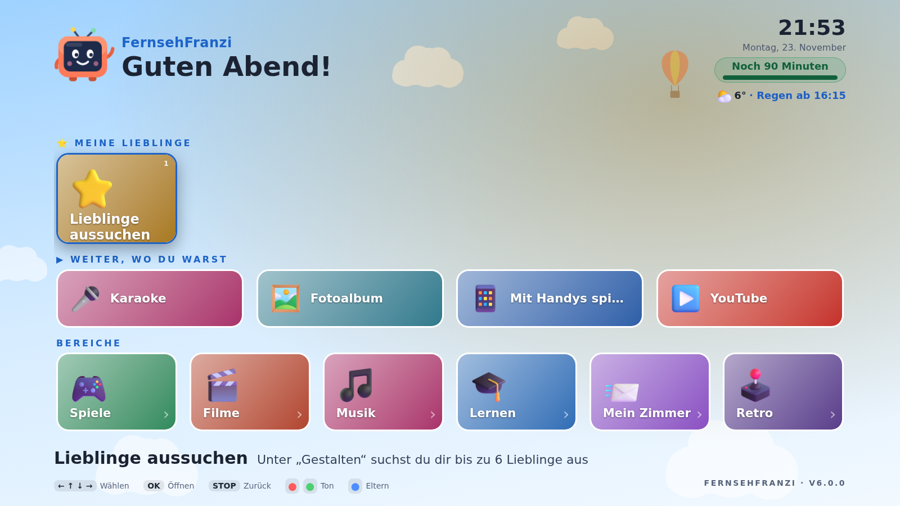
Die Farbe „Hellblau“ mit dem Wetter oben rechts.
🌤️ Wetter
Oben rechts steht in einer Zeile das Wetter: Symbol, Temperatur und ein Satz wie „Regen ab 16:15“ oder „Es regnet –
trocken ab 18:00“. Die Kachel Wetter zeigt dazu die nächsten zwölf Stunden, fünf Tage, unter „Wann können wir
raus?“ die trockenen Zeiten bei Tageslicht und einen Anzieh-Tipp. Ist es gerade trocken, schlägt sie ein Spiel für
draußen aus den Kinderwelten vor.
Die Vorhersage kommt von Open-Meteo, ohne Konto und ohne Schlüssel. Gerechnet wird wie im Familien Dashboard: Ab 0,1 mm
ist es nass (wo möglich in Viertelstunden), ein trockenes Fenster dauert mindestens anderthalb Stunden bei Tageslicht und
hat unter 55 % Regenwahrscheinlichkeit. Der Fernseher fragt höchstens alle 30 Minuten nach. Einrichten: Inhalte → Wetter,
Ort oder Postleitzahl suchen, den richtigen Treffer antippen, „Wetter einschalten“.
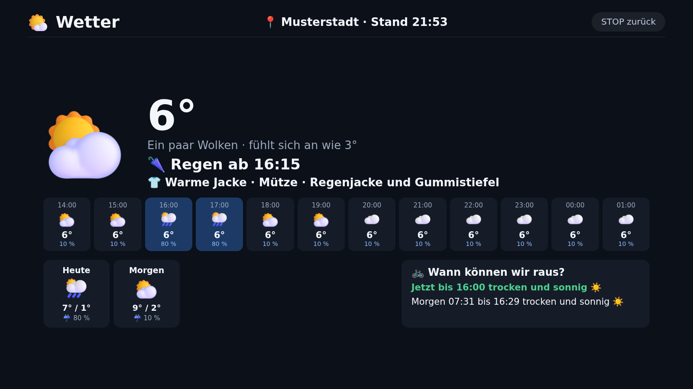
Die Wetter-Seite (Beispieldaten).
🏫 Schule
Die Kachel Schule holt aus der Klassenkiste, was das Kind dort auch sieht. Die Reiter sind Heute (Stunden mit
Ausfall ❌ und Änderung 🔄), Hausaufgaben (⏰ bis morgen), Termine, Nachrichten und Morgen.
←→ wechselt den Reiter, OK öffnet eine
Hausaufgabe oder Nachricht ganz. Der Fernseher liest nur: Er hakt keine Hausaufgabe ab und markiert keine Nachricht als
gelesen.
Alle 15 Minuten schaut er nach. Neue Hausaufgaben, neue Klassennachrichten und Stundenausfälle meldet er einmal,
als Nachricht am Fernseher und auf Wunsch per Telegram an die Eltern. Am Abend vor einem Schultag (Vorgabe 18 Uhr) kommt
der Morgen-Check: erste Stunde und die Hausaufgaben bis morgen. In den eingetragenen Ferien bleibt er still.
Voraussetzung ist die eingerichtete Kachel „Klassenkiste“, in der das Kind am Fernseher einmal angemeldet ist.
Einschalten: Inhalte → Schule (Klassenkiste).
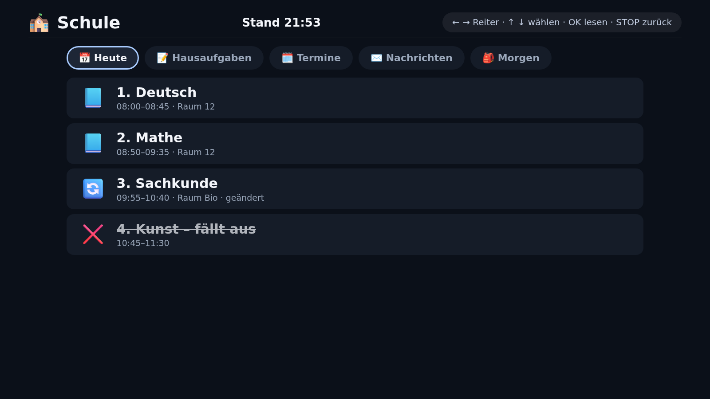
Die Schul-Seite: heutige Stunden mit Änderung und Ausfall.
📖 Geschichten & Rätsel
Die Kachel Geschichten & Rätsel holt Inhalte aus den Kinderwelten der Familienfabrik: Geschichten und frei
lesbare Bücher in großer Schrift zum Selberlesen (↓ blättert, im Buch springt
←→ ein Kapitel und das letzte Kapitel merkt sich der Fernseher),
die Kinder-News der Familienfabrik, Spiele für draußen und das Rätsel des Tages (OK zeigt die Lösung). Welche Reiter
es gibt, legen die Eltern unter Inhalte → Kinderwelten & Kinder-News fest. Die Kachel „Kinderwelten“ mit der ganzen
App bleibt daneben bestehen.
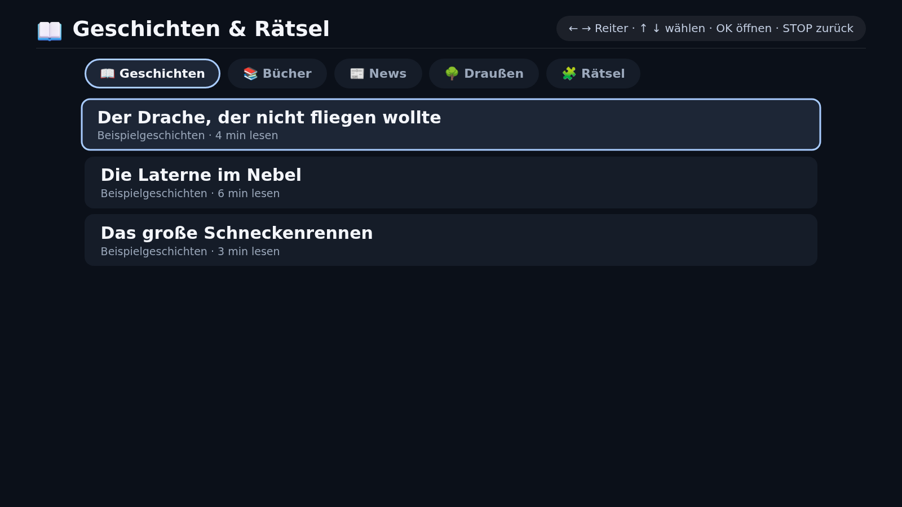
Geschichten zur Auswahl (Beispiele).
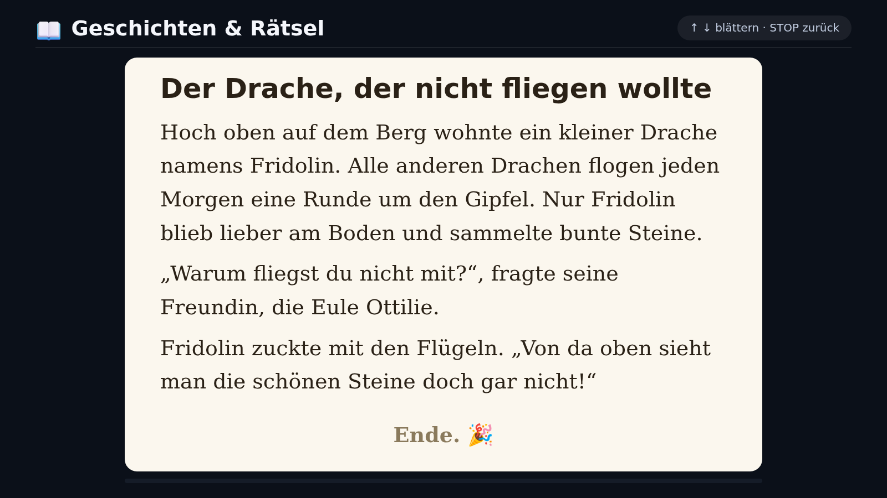
Lesen in großer Schrift.
📰 Kinder-News
Die Kachel Kinder-News gibt es erst, wenn die Eltern unter Inhalte → Kinderwelten & Kinder-News mindestens
eine RSS-Adresse eintragen (eine pro Zeile, höchstens 10). FernsehFranzi bringt selbst keine Quellen mit: Was gelesen wird,
sucht ihr aus. Gezeigt werden Überschrift, ein kurzer Text und das Datum, ohne Links und ohne Bilder.
🔐
TEIL II
Für die Eltern
Einrichtung, Zeit und Regeln, der Elternbereich am Fernseher und die Eltern-Seite am Handy.
Kapitel 12
Erste Einrichtung@@k11@@
Drei Schritte, dann ist der Fernseher bereit: PIN festlegen, Eltern-Seite einschalten, Apps einrichten.
1. Die Eltern-PIN festlegen
Am Fernseher BLAU drücken.
Beim allerersten Mal eine neue PIN mit den Ziffern eingeben, OK, und zur Kontrolle
wiederholen. Die PIN lässt sich nur am Fernseher festlegen, nicht am Handy.
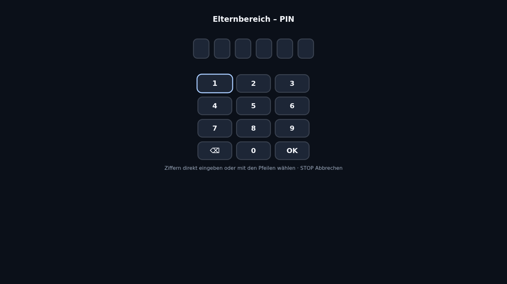
Die PIN-Eingabe am Fernseher.
Die PIN gehört den Eltern
Die PIN nie vor dem Kind eingeben. Nach fünf falschen Versuchen ist der Elternbereich eine Minute gesperrt, danach
wächst die Sperre. Gespeichert wird nur ein gesalzener Hash, nie die PIN selbst.
2. Die Eltern-Seite einschalten
Im Elternbereich in der Reihe „Einstellungen“ „Eltern-Seite einschalten“ wählen.
Oben erscheint die Adresse fürs Handy, in zwei Varianten: mit Gerätename und mit Zahlen-Adresse. Am Handy im
selben WLAN in den Browser eintippen; klappt die erste nicht, die zweite nehmen.
Mit derselben PIN anmelden und die Seite als Lesezeichen oder auf den Startbildschirm legen.
3. Apps einrichten
Auf der Eltern-Seite unter Apps bekommen Plex, Bücher, Gute Nacht und die Video-Ordner ihre Adressen im
Heimnetz. Für Hörbücher, Video-Ordner und Wecktöne gibt man im FileBrowser einen Ordner frei („Teilen“, unbefristet,
ohne Passwort) und fügt den Link ein. Unter Inhalte → YouTube-Videos werden Videos und Playlisten gespeichert.
Kapitel 16 beschreibt jede Aufgabe Schritt für Schritt.
Kapitel 13
Zeit und Regeln@@k12@@
Bildschirmzeit und Gaming-Zeit für den Tag, Grenzen je App und Sperrzeiten – gezählt wird auf dem Gerät, nicht im Browser.
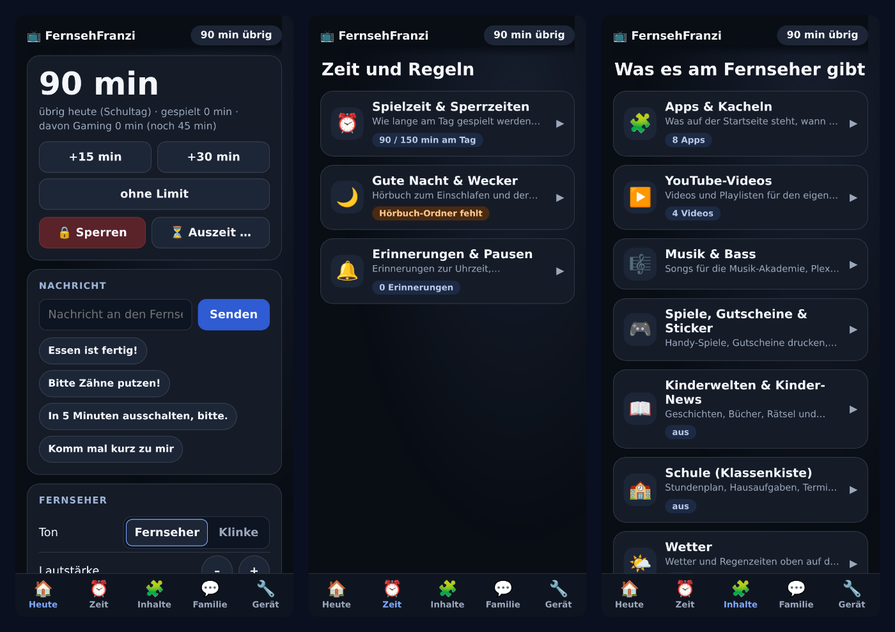
Die Eltern-Seite: Heute und die Reiter Zeit, Inhalte, Familie, Gerät.
Bildschirmzeit und Gaming-Zeit
Die Bildschirmzeit ist die Zeit des Tages für alles zusammen, zum Beispiel 90 Minuten an Schultagen und 150
Minuten am Wochenende und in den Ferien. Die Gaming-Zeit ist ein Teil davon, zum Beispiel höchstens 45 Minuten
Spiele. Ist sie aufgebraucht, gehen Spiele nicht mehr – Filme, Lernen und Malen aber schon, solange Bildschirmzeit übrig
ist. +15 / +30 Minuten der Eltern und der Lernbonus gelten für beide.
Jede App und jedes eingebaute Spiel bekommt unter Inhalte → Apps & Kacheln eine von vier Zeitarten:
Zeitart
Bedeutung
Bildschirmzeit
zieht von der Bildschirmzeit ab (z. B. YouTube, Videos)
Gaming-Zeit
zieht von der Bildschirmzeit und von der Gaming-Zeit ab (z. B. Retro-Spiele, Snake, Memory)
Nur eigenes Limit
kostet keine Bildschirmzeit, hat aber eine eigene Höchstgrenze am Tag (z. B. 30 Minuten)
Kein Limit
kostet keine Zeit, nur die Sperrzeiten gelten (z. B. Lernseiten, Malen, Gute Nacht)
Zusätzlich kann jede App „höchstens X Minuten“ haben. Ohne Tastendruck zählt nach drei Minuten nichts mehr; Filme
zählen, solange sie laufen. Jede Kachel lässt sich mit dem Schalter rechts aus- und wieder einschalten – auch die
eingebauten Spiele und Kacheln.
Sperrzeiten
Sperrzeiten wie „Nacht“ (19:30–08:00) oder „Schule“ (08:00–14:00 an Schultagen, nicht in den Ferien) sperren
jede App, auch freie, außer sie ist dort ausdrücklich erlaubt. Gute Nacht und Familie sind immer erlaubt.
Beispiel Plex: frei, in „Schule“ erlaubt, in „Nacht“ gesperrt.
Warnungen, Kulanz und Ende
Hinweise bei 10, 5 und 1 Minute vor Timer-Ende und vor jeder Sperrzeit.
Am Timer-Ende zwei Minuten Kulanz; ein Retro-Spiel speichert, dann erscheint die Startseite. Wählbar: Der
Fernseher geht dann aus.
Zur Nachtruhe kann Gute Nacht von selbst öffnen. Wählt niemand eine Zeit, kommt nach 5, 15 und 25 Minuten
ein kleiner Alarm, nach 30 Minuten ein Countdown, dann geht der Fernseher aus.
Bewegungspause und Lernbonus
Unter Zeit → Erinnerungen & Pausen lassen sich die Bewegungspause (nach wie vielen Minuten am Stück, wie
lange, bei welchen Angeboten) und der Lernbonus (wie viel Lernzeit wie viel Spielzeit bringt, Tageshöchstwert)
einstellen. Für jedes Angebot gibt es einen eigenen Schalter: So unterbricht die Pause etwa Spiele, aber keinen Film.
Nur aktive Lernminuten zählen; der Lern-Check am Fernseher bestätigt sie.
Ferien und Feiertage
Unter Zeit → Spielzeit & Sperrzeiten → Ferien und freie Tage das Bundesland wählen und „📅 Ferien
eintragen“ tippen: Die amtlichen Ferien (Tabellen der Kultusministerkonferenz) und auf Wunsch die gesetzlichen
Feiertage stehen dann für die kommenden Schuljahre drin. Mit „jedes Jahr automatisch“ kommen neue Schuljahre von selbst
dazu, sobald sie mit einem Update kommen. Bewegliche Ferientage der Schule trägt man mit „+ eigene freie Tage“ ein; sie
bleiben beim Eintragen erhalten. An Ferientagen gelten die Zeiten fürs Wochenende, und Sperrzeiten mit „nicht in den
Ferien“ entfallen.
Erinnerungen
Erinnerungen („Zähneputzen!“) bekommen Uhrzeit, Text, Wochentage und eine von drei Einstellungen: immer,
nicht in den Ferien (z. B. „Sportsachen einpacken!“ oder Trainingstermine) oder nur in den Ferien.
Klänge
Jede Erinnerung, jeder Telegram-Kontakt, die Nachrichten von Mama oder Papa und die Meldungen der Schule
(Klassenkiste, Morgen-Check) können einen eigenen Klang bekommen. So hört das Kind schon am Ton, woher eine Nachricht kommt.
Im Archiv stehen 15 Klänge, die der Fernseher selbst erzeugt: Gong, Glöckchen, Xylophon, Harfe, Spieluhr, Fanfare,
Vogelzwitschern, Wassertropfen, Fahrradklingel, Sternschnuppe, Marimba, Level geschafft, Trommelwirbel, Ufo und Sanft,
dazu „Ohne Ton“. Neben jeder Auswahl spielt ▶ den Klang am Handy und 📺 am Fernseher. Ohne Wahl bleibt es beim Gong.
Eigene Klänge: Unter Zeit → Erinnerungen & Pausen → 🎵 Eigene Klänge trägt man den Freigabelink eines
FileBrowser-Ordners mit kurzen Tönen ein (mp3, ogg, wav …; es darf auch der Ordner der Wecktöne sein). Seine Dateien stehen
dann in jeder Klang-Auswahl unter „🎵 Eigene Klänge“. Am Fernseher spielt ein eigener Klang höchstens 10 Sekunden, jede
Datei darf höchstens 4 MB groß sein; ist der Ordner nicht erreichbar, kommt der Gong.
Kapitel 14
Der Elternbereich am Fernseher@@k13@@
Das Wichtigste direkt am Fernseher: Zeit geben, sperren, Ton, Gute Nacht, Neustart.
BLAU drücken (Controller: Back und Start lange halten, Tastatur: Menü ⚙️).
PIN mit den Ziffern eingeben, OK.
Mit ←→ in einer Reihe, mit ↑↓ zwischen den Reihen wählen, OK führt aus.
STOP schließt den Elternbereich.
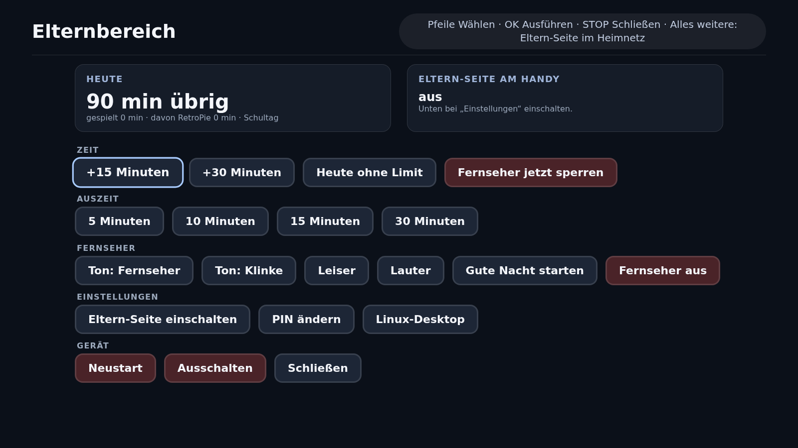
Der Elternbereich am Fernseher.
Reihe
Knöpfe
Zeit
+15 Minuten, +30 Minuten, Heute ohne Limit, Fernseher jetzt sperren
Auszeit
5, 10, 15 oder 30 Minuten Auszeit mit Countdown; während einer Auszeit „Auszeit verlängern“
Fernseher
Ton über Fernseher oder Klinke (und Kopfhörer, wenn einer verbunden ist), leiser, lauter, Gute Nacht starten, Fernseher aus
Ausschalten oder Neustart immer über die Reihe „Gerät“. Sonst können gerade geschriebene Einstellungen verloren gehen.
Kapitel 15
Die Eltern-Seite am Handy@@k14@@
Alles einstellen, ohne aufzustehen – im Heimnetz, mit derselben PIN.
Unten liegen fünf Reiter: 🏠 Heute für das, was man jeden Tag braucht, und ⏰ Zeit, 🧩 Inhalte,
💬 Familie und 🔧 Gerät für die Einstellungen. Jeder Reiter zeigt seine Bereiche als kurze Zeilen mit dem
Stand (orange heißt: Hier fehlt etwas); ein Tipp klappt einen Bereich auf, ein zweiter Tipp oder die Zurück-Taste des
Handys klappt ihn wieder zu. Längere Erklärungen stehen eingeklappt hinter „ℹ️“. Es gibt keine Speichern-Knöpfe: Jede
Änderung wird kurz nach der Eingabe gespeichert, unten erscheint „Gespeichert ✔“. Stimmt ein Wert nicht, wird das Feld
rot und unten steht, warum. Nach 15 Minuten ohne Aktion meldet sich die Seite ab. Sie ist nur im Heimnetz erreichbar.
Reiter
Inhalt
🏠 Heute
Restzeit, +15/+30 Minuten, ohne Limit, 🔒 Sperren und ⏳ Auszeit nebeneinander, Nachricht an den
Fernseher (mit Absender), Ton und Lautstärke, „📷 Was läuft gerade?“, Gute Nacht, Fernseher aus, Lernzeit, unten 📊 Statistik
⏰ Zeit
Spielzeit & Sperrzeiten (Bildschirm- und Gaming-Zeit, Sperrzeiten, Ferien) ·
Gute Nacht & Wecker · Erinnerungen & Pausen (Erinnerungen mit Klang, eigene Klänge, Bewegungspause, Lernbonus)
🧩 Inhalte
Apps & Kacheln · YouTube-Videos (Kategorien auch vorübergehend aus) ·
Musik & Bass · Spiele, Gutscheine & Sticker · Kinderwelten & Kinder-News ·
Schule (Klassenkiste) · Wetter · Farben
💬 Familie
Telegram & Kontakte (Kontakte, Grenzen, Klang je Kontakt, Verlauf) ·
Bilder & Fotoalbum (Foto-Ordner, Speicherlimit, Bilder des Kindes)
🔧 Gerät
Gerät & Ton (Name, Lautstärke, Bluetooth, Retro-Bilder, Sicherung, Neustart) ·
Internetseiten (Seiten, Whitelist) · Hilfe & Anleitungen
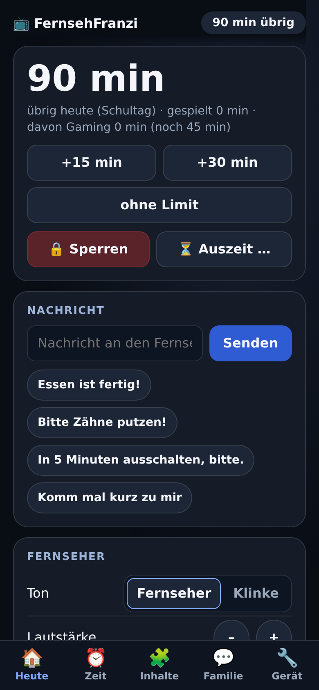
Heute
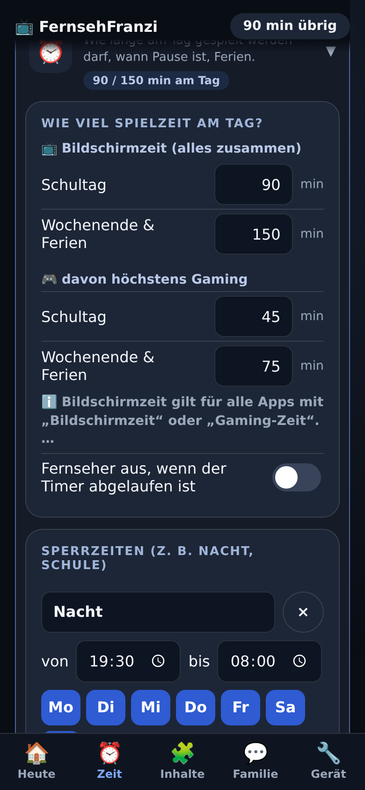
Zeit: Spielzeit & Sperrzeiten
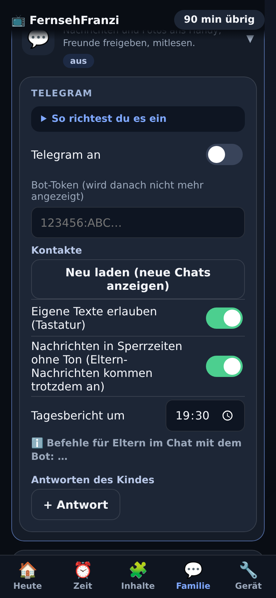
Familie: Telegram
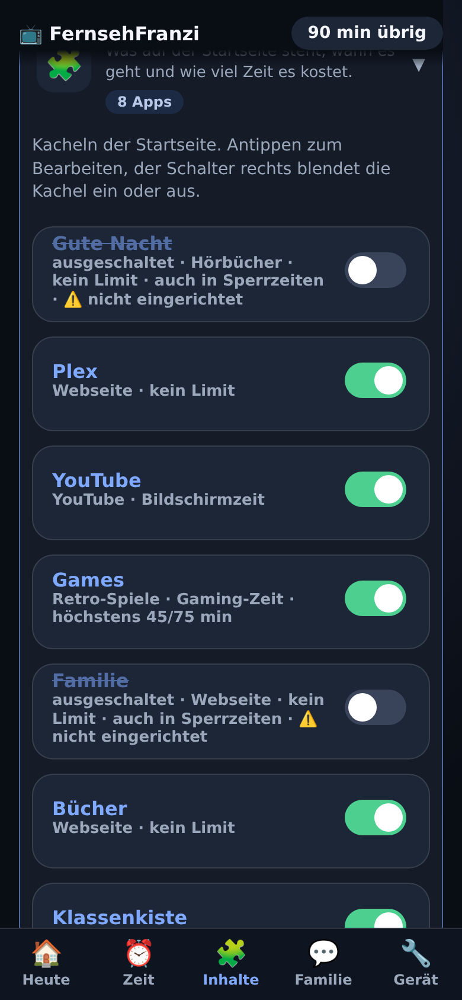
Inhalte: Apps & Kacheln
Das Bild vom Fernseher
„📷 Was läuft gerade?“ zeigt ein Bild des Fernsehers. Am Fernseher erscheint dann kurz „📷 Mama oder Papa haben
kurz geschaut“, damit niemand heimlich zuschaut. Von Retro-Spielen gibt es kein Bild.
Telegram: Kontakte und Mitlesen
Unter „Familie → Telegram & Kontakte“ hat jeder Kontakt ein Symbol, einen Namen und Schalter: Eltern (darf alles),
Kind darf schreiben, eigene Texte erlaubt und Nachrichten nur außerhalb der Sperrzeiten (sie warten
dann bis danach). Neue Kontakte wie eine Freundin starten streng: Sie können schreiben, das Kind ihnen aber erst nach
eurer Freigabe. Weitere Schalter: Fotos, Sprachnachrichten und Videos erlaubt, und je Elternteil, welche
Meldungen er bekommt (Spielzeit aufgebraucht, Nachrichten mit Freunden, Gutschein, Wecker, gelesen,
Tagesbericht). Unter „Verlauf“ stehen die letzten Nachrichten je Kontakt, hin und zurück, mit Fotos zum Ansehen.
Der Schalter „Nachrichten in Sperrzeiten ohne Ton“ und die Uhrzeit des Tagesberichts stehen ebenfalls hier.
Befehle im Chat mit dem Bot
Eltern-Kontakte können FernsehFranzi von unterwegs steuern:
Befehl
Wirkung
/status
Restzeit, was gerade läuft, ob gesperrt ist
/zeit 15 · /zeit 30 · /zeit frei
Mehr Zeit bzw. heute ohne Limit
/sperren · /freigeben
Fernseher sperren (mit Text) oder freigeben
/auszeit 15
Auszeit mit Countdown für 15 Minuten (1 bis 240); nochmal schicken verlängert, /freigeben beendet früher
/gutenacht · /aus
Gute Nacht starten, Fernseher ausschalten
/foto
Bild vom Fernseher aufs Handy (am Fernseher erscheint 📷)
/bericht · /hilfe
Tagesbericht jetzt, alle Befehle
Fotoalbum und Speicherplatz
Unter „Familie → Bilder & Fotoalbum“: Fotoalbum erlauben, den Foto-Ordner (FileBrowser-Freigabelink) eintragen
und festlegen, wie viel Platz Zeichnungen und Album belegen dürfen. Ist der Speicher voll, kann das Kind nichts Neues
speichern, bis es alte Bilder löscht.
Sicherung
Unter „Gerät → Gerät & Ton → Sicherung“ lässt sich alles als ZIP-Datei herunterladen und wieder einspielen: Einstellungen,
Zeitkonto, Statistik, Gutscheine, Nachrichten, Sticker, Hörbuch-Stände und Bilder. PIN und Telegram-Token sind nicht
enthalten, ebenso nicht der Telegram-Verlauf. Vor dem Einspielen sichert das Gerät den alten Stand selbst.
Heute → „Jetzt sperren“ (Fernseher: Elternbereich → „Fernseher jetzt sperren“).
Auszeit geben
Heute → „⏳ Auszeit“ → Minuten antippen (oder eintragen, „Auszeit starten“). Am Fernseher läuft nur noch ein großer Countdown, danach ist er von selbst wieder frei. „Auszeit beenden“ hört früher auf, „+5 min“ verlängert. Auch per Telegram: /auszeit 15.
Familie → Bilder & Fotoalbum: erlauben, Foto-Ordner (FileBrowser-Freigabelink) eintragen.
Freundin bei Telegram freigeben
Sie schreibt dem Bot „Hallo“, dann Familie → Telegram & Kontakte → „Erlauben“. Danach je Kontakt: Kind darf schreiben, eigene Texte, nur außerhalb der Sperrzeiten.
Handy-Spiele erlauben
Inhalte → Spiele, Gutscheine & Sticker → Handy-Spiele → „Handy-Spiele erlauben“. Am Fernseher erscheint die Kachel „Mit Handys spielen“.
Hörbücher einrichten
FileBrowser: Ordner → „Teilen“, unbefristet, ohne Passwort → Link kopieren. Inhalte → Apps & Kacheln → Gute Nacht → Link einfügen.
Internetseite lädt nicht richtig
Gerät → Internetseiten: blockierte Einträge oben → „Erlauben“. Seite neu öffnen.
Heute → +15 / +30 / ohne Limit (auch im Elternbereich).
Nachricht schicken
Heute → Nachricht → Text oder Schnellknopf („Essen ist fertig!“).
Plex tagsüber frei, nachts aus
Inhalte → Apps & Kacheln → Plex → „Kein Limit“, Erlaubt in Sperrzeiten: nur „Schule“.
Sperrzeiten einstellen
Zeit → Spielzeit & Sperrzeiten: Name, von–bis, Tage, „nicht in den Ferien“, „Nachtruhe“.
Speicherplatz ändern
Familie → Bilder & Fotoalbum → „Speicherplatz für das Kind (MB)“.
Telegram einrichten
Bot bei @BotFather anlegen, Token unter Familie → Telegram & Kontakte eintragen, einschalten. Jeder schreibt dem Bot einmal „Hallo“ und wird mit „Erlauben“ freigegeben.
Ton über Fernseher oder Anlage
ROT = Fernseher, GRÜN = Klinke. Die Wahl bleibt gespeichert.
Bluetooth-Kopfhörer nutzen
Einmal koppeln (Gerät → Gerät & Ton → Bluetooth). Verbindet er sich, kommt der Ton von selbst dorthin, danach zurück. Abschalten: Gerät → Gerät & Ton → „Ton automatisch in den Bluetooth-Kopfhörer“.
Wecker erlauben
Zeit → Gute Nacht & Wecker: frühestens, höchste Lautstärke, Weckton-Ordner.
YouTube-Videos speichern
Inhalte → YouTube-Videos: Kategorie wählen, Link einfügen → Hinzufügen.
YouTube-Reihenfolge ändern
Inhalte → YouTube-Videos: Kategorie aufklappen, mit ↑ ↓ die Kategorie oder einzelne Videos verschieben.
Kapitel 17
Wenn etwas nicht klappt@@k16@@
Problem
Lösung
Fernbedienung reagiert nicht
Am Fernseher den richtigen HDMI-Eingang wählen. Sonst Elternbereich → Neustart.
Man kommt nicht zurück
EXIT (im Retro-Spiel lange) oder die Xbox-Taste.
Kein Ton oder zu leise
ROT oder GRÜN passend zum Lautsprecher, dann GELB + ↑. Sonst die Höchstlautstärke auf der Eltern-Seite prüfen.
Video oder Seite bleibt schwarz
Gerät → Internetseiten: Blockiertes erlauben.
YouTube-Video ruckelt oder puffert
Der Pi 3 bekommt höchstens 720p. Puffert es oft, hilft ein LAN-Kabel statt WLAN.
Video in der Musik-Akademie „nicht verfügbar“
Der Kanal erlaubt das Abspielen außerhalb von YouTube nicht. Einen anderen Link eintragen.
Schwarzer Bildschirm nach dem Einschalten
Ein bis zwei Minuten warten, dann Elternbereich → Neustart. Bleibt es schwarz: Kapitel 18.
Retro-Spiel: Figur reagiert nicht
C64: LB wechselt den Joystick-Anschluss.
PIN vergessen
Kapitel 18, „PIN vergessen“ (braucht einen PC).
🛠️
TEIL III
Technik
Für alle, die das Gerät betreuen: Aufbau, Konten, Ausliefern, Fehlersuche und Retro-Spiele.
Kapitel 18
Aufbau und Betrieb@@k17@@
Die Teile
Teil
Aufgabe
Läuft als
fernsehfranzi-server
Startseite (127.0.0.1:8765), Zeitkonto, Elternbereich, Eltern-Seite im Heimnetz (Port 8766, nur wenn eingeschaltet)
Kiosk-Benutzer
fernsehfranzi-eingabe
Fernbedienung (CEC), Controller und Tastatur-Sondertasten
root
kiosk.py
Chromium im Kiosk über die DevTools-Pipe, Desktop-Apps, Bildschirmfoto
Kiosk-Benutzer
fernsehfranzi-retropie
EmulationStation auf Konsole tty8
Kiosk-Benutzer
fernsehfranzi-scraper
Bilder für Retro-Spiele (einmalig auf Anforderung)
Kiosk-Benutzer
Spielraum
Zugang für die Handys im Heimnetz (Port 8767), nur solange am Fernseher ein Handy-Spiel offen ist
im Server
Code liegt in ~/fernsehfranzi, Daten (Einstellungen, Zeitkonto, PIN-Hash, Bilder, Protokolle) in
~/fernsehfranzi-daten. Die Daten überleben jedes Update.
Konten und Rechte
Der Kiosk-Benutzer meldet sich automatisch an und darf als root nur wenige, fest eingetragene Befehle
ausführen (RetroPie starten und stoppen, Neustart, Ausschalten, Whitelist, Bluetooth, Scraper). Ein eigenes
Admin-Konto mit Passwort übernimmt Updates und Wartung.
Befehle am PC
Befehl
Wirkung
make check · make test
Alle Prüfungen und Tests
make v3-plan
Trockenlauf: was übertragen würde
make v3-deploy
Ausliefern: zwei Rückfragen, Sicherung, Übertragen, Einrichten, Protokoll
make v3-pruefen
Nachprüfung nach dem Neustart (ändert nichts)
make v3-rollback SICHERUNG=…
Zurück auf den Stand vor einem Deploy
make anleitung
Alle Anleitungen als PDF neu erzeugen
make bildschirmfotos
Die Bilder für Handbuch und README neu erzeugen
Ausliefern
Seit 5.3 kündigt der Deploy sich am Fernseher an: Nach der zweiten Bestätigung läuft oben rechts 10 Sekunden ein
Countdown („schnell speichern“), danach steht ein Warnbildschirm, und keine Taste wirkt. Ist make v3-pruefen
grün, ist der Fernseher sofort wieder frei. Bei Rot bleibt der Warnbildschirm (von Hand: make v3-wartung-aus),
spätestens nach 45 Minuten endet er von selbst.
make v3-deploy, beide Rückfragen mit „ja“ beantworten, beim Systemschritt das Admin-Passwort eingeben.
Während des Deploys kein Retro-Spiel laufen lassen.
Wenn verlangt, sauber neu starten (sudo systemctl reboot), nicht den Strom ziehen.
make v3-pruefen und am Fernseher kurz durchklicken. Bei Problemen nicht herumprobieren, sondern
make v3-rollback.
Wie man FernsehFranzi auf einem neuen Raspberry Pi einrichtet, beschreibt docs/INSTALLATION.md. Die
Entwickler-Dokumentation (docs/ENTWICKLUNG.md im Quellcode) beschreibt Architektur, Schnittstellen und
Datenablage im Detail.
Kapitel 19
Retro-Spiele einrichten@@k18@@
Kiosk-Modus
RetroArch und EmulationStation laufen im Kiosk-Modus: Im Spielmenü gibt es nur Weiterspielen, Speichern, Laden und
Beenden, in der Spieleliste keine Einstellungen. Zum Entsperren für Eltern gibt man in der Spieleliste den
Entsperr-Code ein (Steuerkreuz und A/B); er wird bei der Installation zufällig gesetzt und steht im
Installationsprotokoll. Das Entsperren gilt nur, bis RetroPie beendet wird.
Neue Spiele
ROMs kommen in die Ordner unter ~/RetroPie/roms/<system>/. Danach auf der Eltern-Seite
„Bilder für neue Spiele holen“ drücken. Die Bilder stammen aus den freien libretro-thumbnails.
C64 und Amiga
Befehl am PC
Wirkung
make retro-plan / retro-erweitern
C64 (lr-vice) und Amiga (Amiberry) nachinstallieren
make retro-einrichten
Kickstarts, C64-Tasten und Schnelllauf, CD32-Abbilder
make amiga-bibliothek
Fehlende Bibliothek für Amiberry
Amiga-Spiele brauchen die Kickstart-ROMs in ~/RetroPie/BIOS/amiga. CD32-Spiele brauchen zusätzlich die
CD32-ROMs (Kickstart und Extended) und müssen als .cue entpackt im Ordner liegen. ROMs und Kickstart-Dateien
liegen FernsehFranzi nicht bei.
Leistung
Der Raspberry Pi 3B+ schafft 8- und 16-Bit-Konsolen, Game Boy und die meisten Amiga-Spiele flüssig. Nintendo 64 ist
die Grenze: anspruchsvolle Spiele ruckeln etwas. Ein Lüfter hilft, weil der Pi bei 60 °C seinen Takt senkt.
📋
ANHANG
Zum Nachschlagen
Alle Tasten und Symbole auf einen Blick.
Anhang A
Alle Tasten auf einen Blick@@k19@@
Was
Fernbedienung
Controller
Tastatur
Auswählen
Pfeile
Steuerkreuz
Pfeile
Öffnen
OK
A
Enter
Zurück
STOP
B
Zurück ↶
Zur Startseite
EXIT
Xbox
Haus ⌂
Abspielen, Pause
▶⏸
Start
⏯
Spulen
◀◀▶▶
LBRB
⏮ ⏭
Lauter, leiser
GELB + ↑ ↓
Back + ↑ ↓
Lautstärke
Ton Fernseher / Klinke
ROT / GRÜN
–
–
Nachrichten
Kachel
Kachel
Lupe 🔍
Elternbereich
BLAU
Back + Start lang
Menü ⚙️
Im Retro-Spiel (Controller)
Was
Tasten
Speichern / Laden
Xbox + RB / LB
Speicherplatz
Xbox + ←→
Spiel-Menü
Xbox + X
Beenden
Xbox + Start (Fernbedienung: STOP oder EXIT)
Anhang B
Symbole und Begriffe@@k20@@
Symbole auf grauen Kacheln
⏳ Zeit aufgebraucht · 🌙 Nachtruhe · 🏫 Schule · 🚫 andere Sperrzeit · 🔒 gesperrt · 🕐 Uhr stellt sich ·
⚙️ nicht eingerichtet
Begriffe
Begriff
Bedeutung
Album
Die Fotos aus Nachrichten, die das Kind behalten hat (zählen zum Speicherplatz)
Bildschirmzeit
Die Zeit des Tages für alle Apps mit „Bildschirmzeit“ oder „Gaming-Zeit“
Gaming-Zeit
Der Teil der Bildschirmzeit, der für Spiele gilt
CEC
Steuerung über HDMI: Die Fernbedienung des Fernsehers bedient den Pi
Elternbereich
Die Eltern-Einstellungen am Fernseher (BLAU)
Eltern-Seite
Die Eltern-Einstellungen am Handy im Heimnetz
FileBrowser-Freigabe
Ein geteilter Ordner im Heimnetz, aus dem der Fernseher Hörbücher, Videos und Wecktöne liest
Kachel
Ein Feld auf der Startseite, das eine App, ein Spiel oder eine Seite öffnet
Kiosk
Der abgesicherte Modus: kein Desktop, keine Einstellungen, kein offenes Internet
Klinke
Der Kopfhörer- und Anlagenausgang des Raspberry Pi
QR-Code
Das quadratische Muster im Spielraum; die Handy-Kamera öffnet damit die Mitspiel-Seite
Retro-Spiele
Spiele alter Konsolen und Computer über RetroPie
Spielraum
Die Runde der Handy-Spiele am Fernseher, offen nur, solange gespielt wird
Sperrzeit
Ein Zeitraum, in dem nur ausdrücklich erlaubte Apps gehen
Whitelist
Die Liste der Internetseiten, die der Fernseher öffnen darf
Viel Spaß!
FernsehFranzi ist mit viel Liebe für ein Kind gebaut worden. Wenn etwas fehlt oder nicht klappt: Die Eltern-Seite,
dieses Buch und der Quellcode helfen weiter.